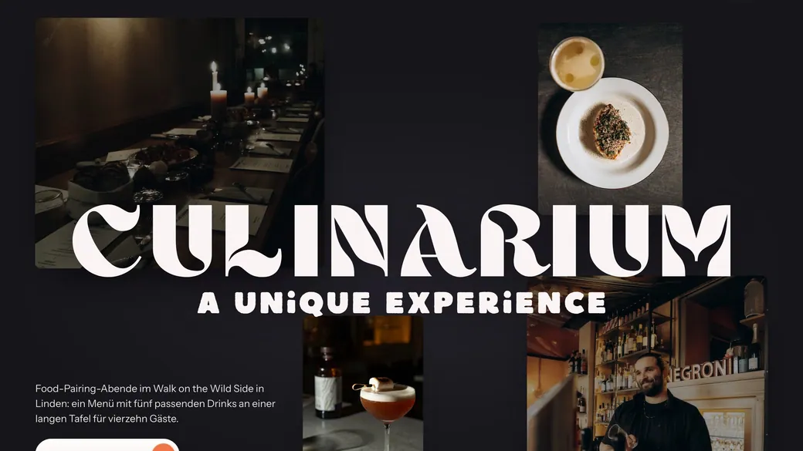
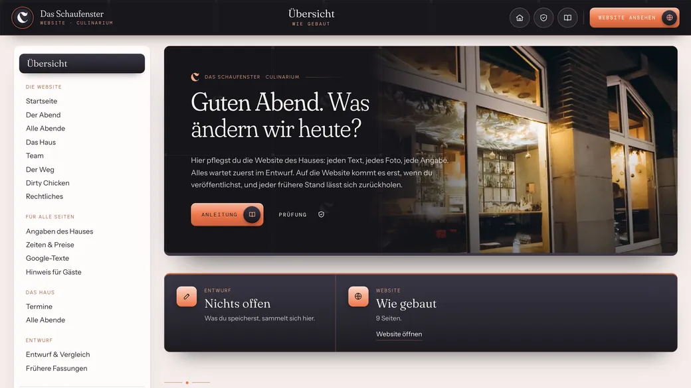
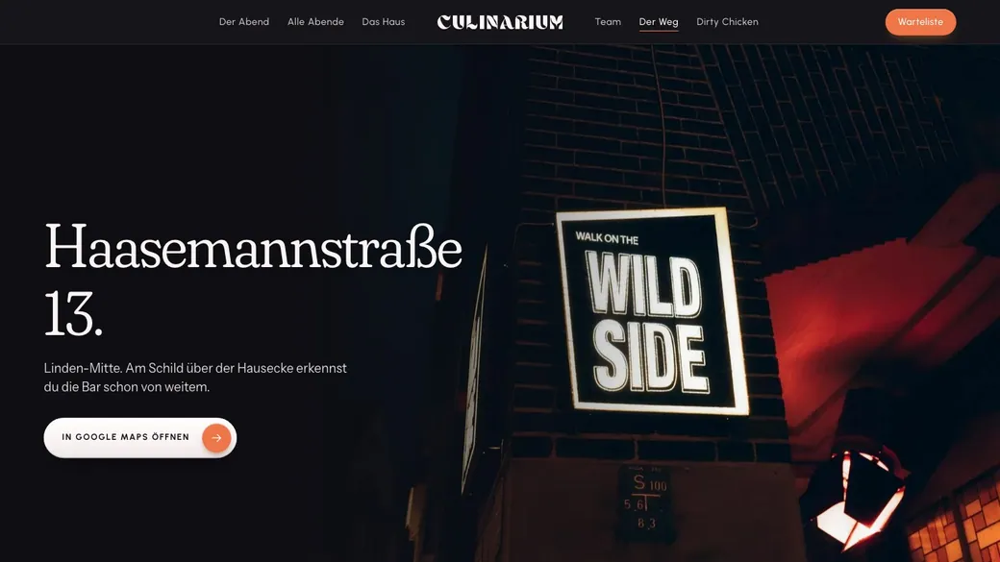
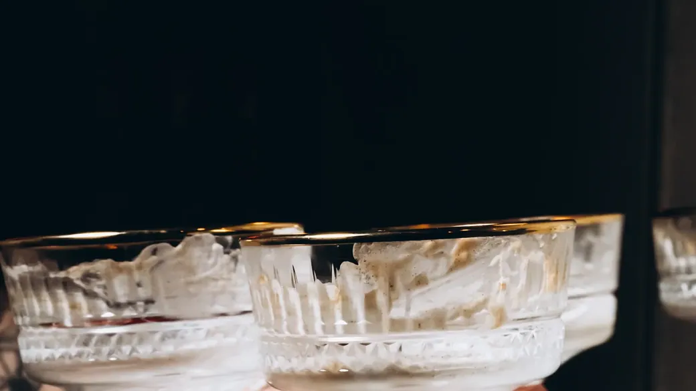

Der Prüfbericht
Was allesgeprüft wurde.
Hier steht in einfachen Worten, was an Website, Karten und Werkzeugen angesehen und ausprobiert wurde, und was danach noch bei euch liegt.
01Die Website
Die Website

Neun Seiten: sieben für eure Gäste von der Startseite bis Dirty Chicken, dazu Impressum und Datenschutz.
- Jede Seite in Safari und in Chrome geöffnet, auf dem Handy und auf dem Rechner. Nichts verrutscht zur Seite, kein Bild fehlt, kein Skript bricht ab.
- Mit vier- und sechsfach gebremstem Rechner gescrollt, wie auf einem älteren Gerät. Die Seiten laufen ruhig, beim Laden springt nichts.
- Termine, Zeiten, Adresse, Menüs und Preise stehen an genau einer Stelle, mit ihrer Quelle, und jede Seite liest von dort.
02Die Karten
Die Karten
Die Karte jedes Abends: Menü in Rudis Zeilen und Momos Drinks.
- Gelesen aus euren Beiträgen und Unterlagen, nicht abgeschrieben.
- Neu gesetzt im Kleid der neuen Seite, die Schriften fest eingebettet.
03Die sieben Werkzeuge
Die sieben Werkzeuge

Die Werkzeuge, mit denen ihr Termine, Menüs, Plakate und Gäste selbst führt.
- Jedes Werkzeug in seinem eigenen Durchgang gebaut und Schritt für Schritt bedient, mit erfundenen Gästen und Zahlen.
- Kein Werkzeug schickt etwas von sich aus und keines öffnet ein Mailprogramm. Antworten an Gäste bleiben als Entwurf im Werkzeug, bis jemand sie selbst verschickt.
04Eure Daten und die eurer Gäste
Eure Daten und die eurer Gäste
Was gespeichert wird und was nicht.
- Gäste bekommen keine Cookies. Im Entwurf werden keine Besuche gezählt; die Besucherliste zeigt erfundene Zahlen.
- Buchung und Warteliste laufen im Entwurf nur zur Probe; es fließt kein Geld, und nichts davon erreicht das echte Haus.
- Suchmaschinen sehen den Entwurf nicht, bis ihr ihn freigebt.
05Die Suche
Die Suche

Wie Gäste das Haus finden, wenn sie bei Google suchen oder eine KI fragen. Was heute schon steht und was beim Freigeben dazukommt.
- Solange die Seite ein Entwurf ist, bleibt sie für Suchmaschinen absichtlich unsichtbar. Freigegeben wird sie erst, wenn sie unter eurer eigenen Adresse läuft.
- Adresse, Termine, Plätze und Zeiten der Abende werden beim Freigeben zusätzlich so hinterlegt, dass Google und KI-Assistenten wie ChatGPT sie direkt lesen können, ohne zu raten.
- Alles Wichtige steht als Text auf der Seite und nicht in Bildern. So kann eine KI, die Gästen bei der Suche hilft, eure Abende, Menüs und Plakate auch wirklich lesen.
- Heute gibt es keine Website. Die neue Seite bekommt eine eigene Adresse, und der Link in der Bio auf Instagram führt dorthin; so findet jeder, der euch sucht, denselben Weg.
- Was außerhalb der Website zählt, gehört genauso dazu: ein Eintrag bei Google Maps und gleiche Angaben überall, wo Culinarium genannt wird. Auf diese Quellen stützen sich auch KI-Assistenten stark. Das lässt sich in der laufenden Betreuung mitpflegen.
06Was offen bleibt
Was offen bleibt

Das könnt nur ihr entscheiden.
- Wessen Angaben im Impressum stehen, und wie Culinarium und die Bar zueinander stehen.
- Wer an welchem Foto und an den Plakaten die Rechte hat.
- Im Entwurf öffnen sich die Werkzeuge ohne Anmeldung. Zum Umzug bekommt jede Person ihren eigenen Zugang.
Jede Zeile hier hat eine Prüfung hinter sich, die sich wiederholen lässt. Wenn ihr zu einem Punkt mehr wissen möchtet, fragt mich einfach.
Zurück zu «Alles auf einen Blick»